🖼 内嵌的 15 张电生理示意图（PPT 已嵌入，此处为预览）
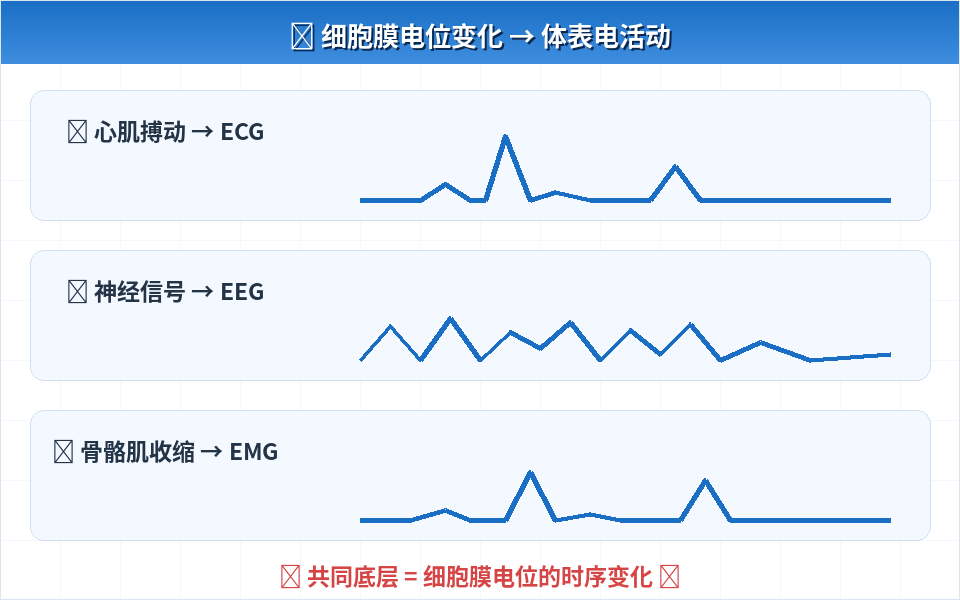
P3 导入 心电/肌电/脑电三波形汇聚图
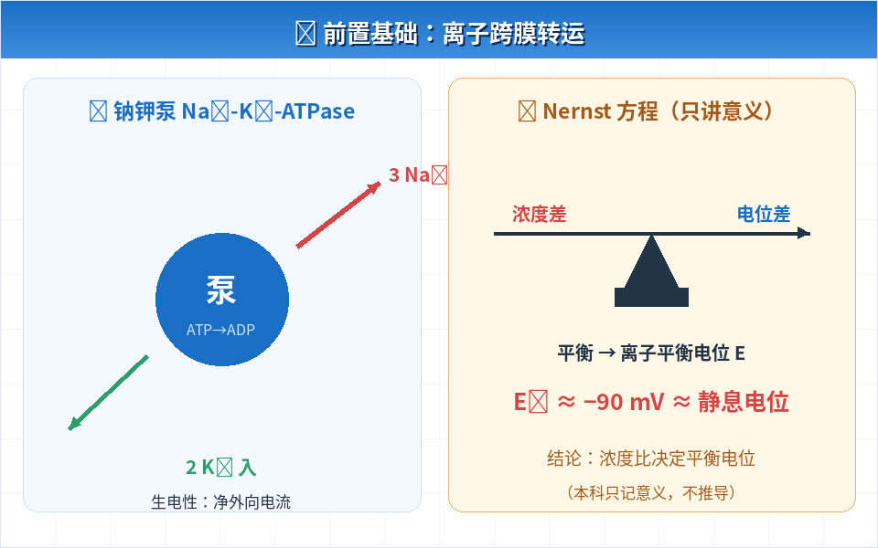
P4 前置基础 钠钾泵3出2入 + Nernst天平图
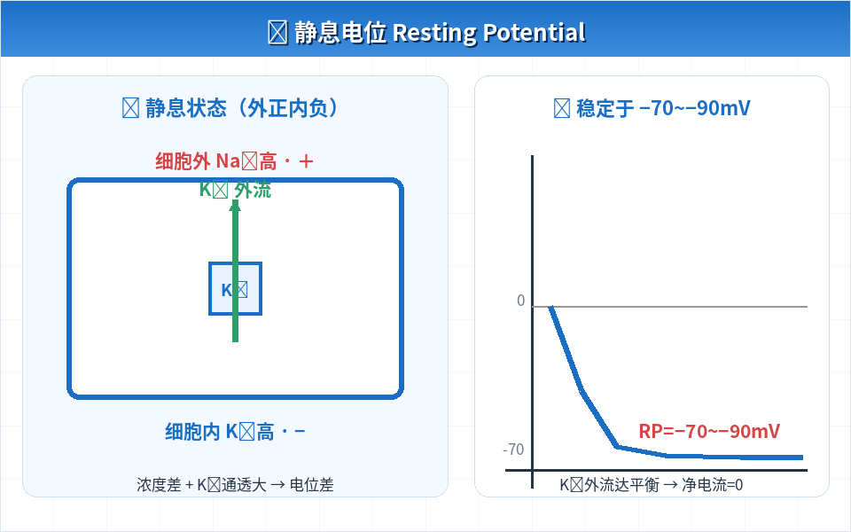
P5 静息电位 K⁺外流 + 电位计图
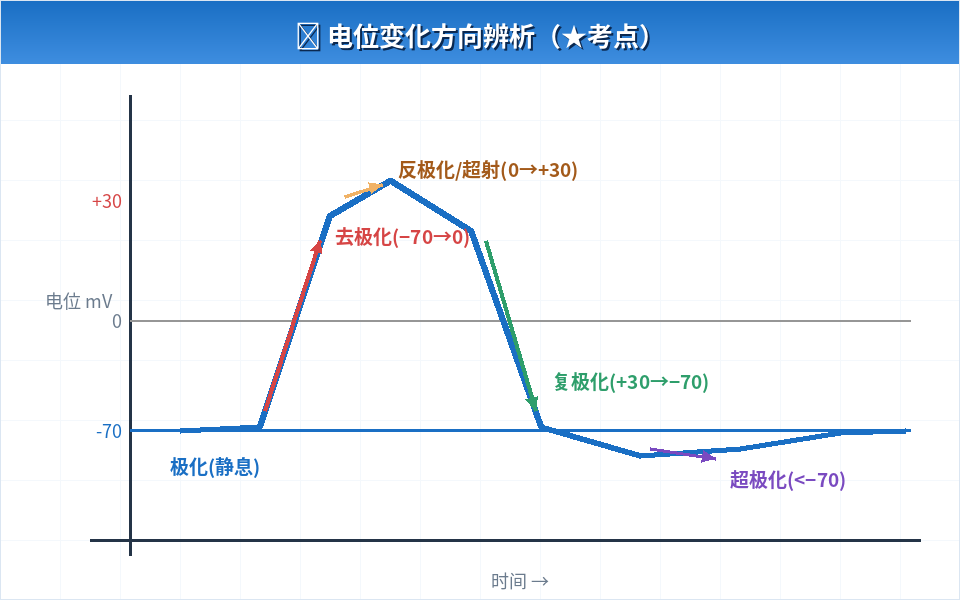
P6 极化概念 去极化/反极化/复极化/超极化方向图
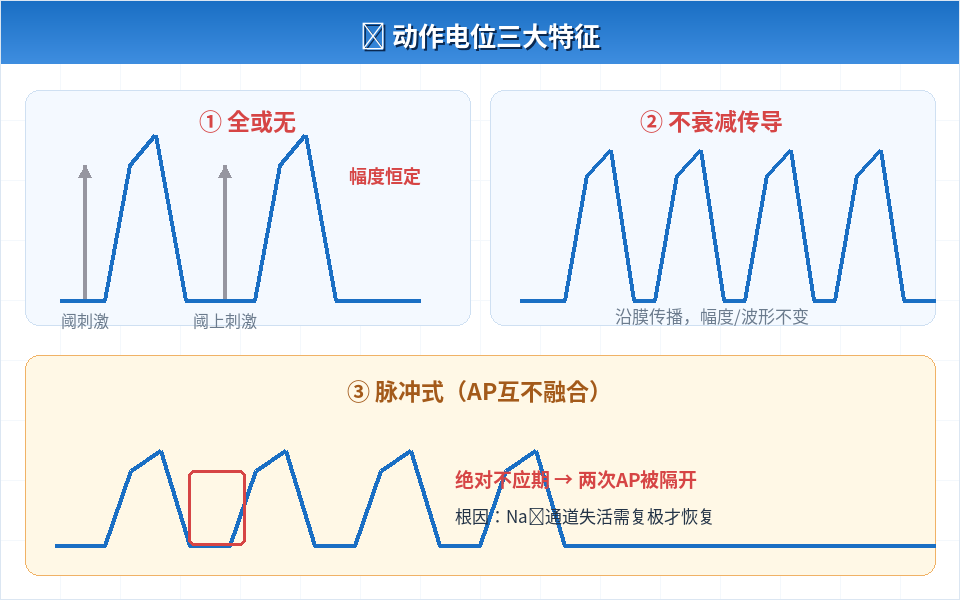
P7 动作电位 全或无/不衰减/脉冲式三特征图
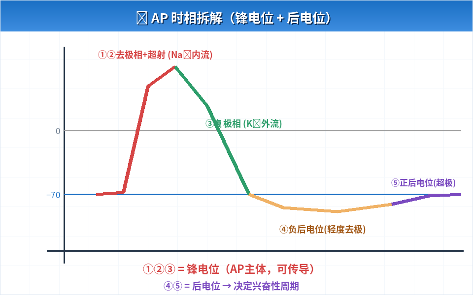
P8 时相拆解 AP分段上色 + 离子标注图
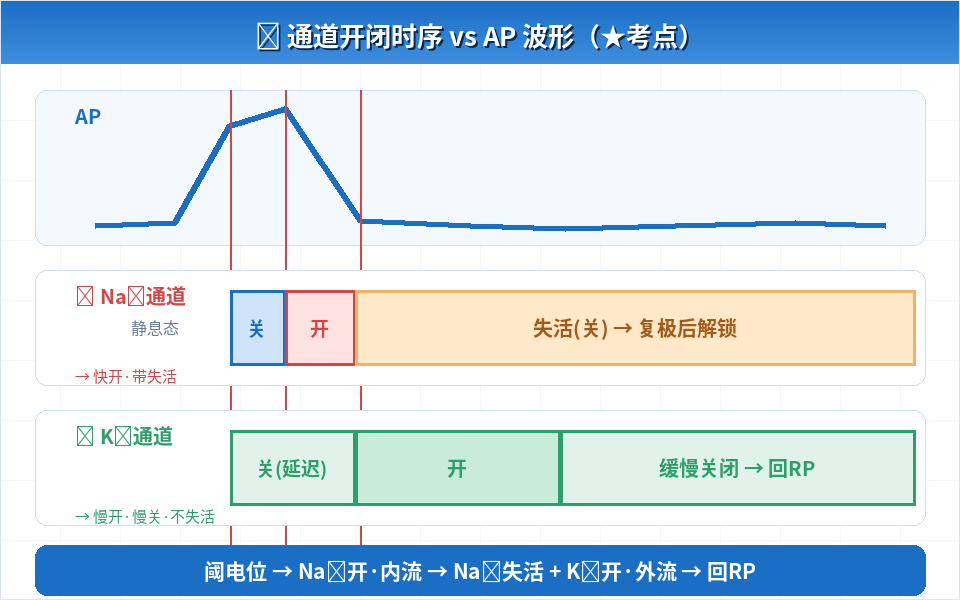
P9 离子机制 Na⁺/K⁺通道三态时序 vs AP对照图
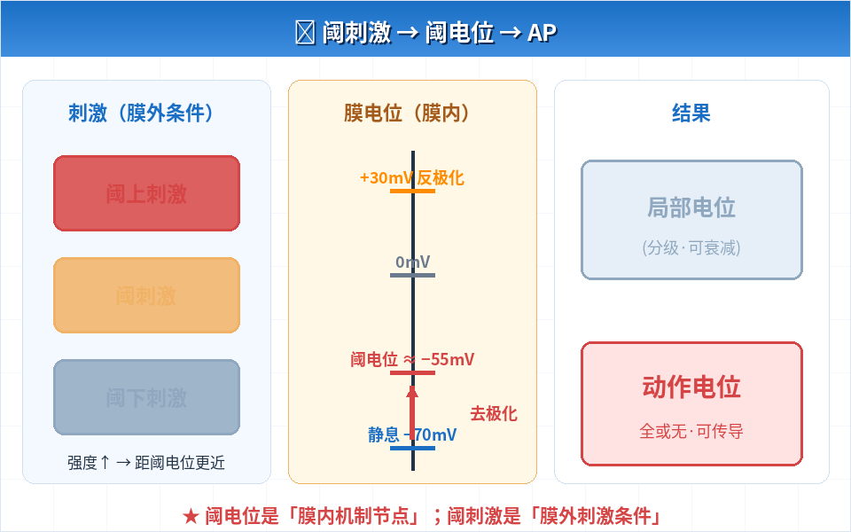
P10 阈电位 阈刺激/阈电位/结果三栏逻辑图
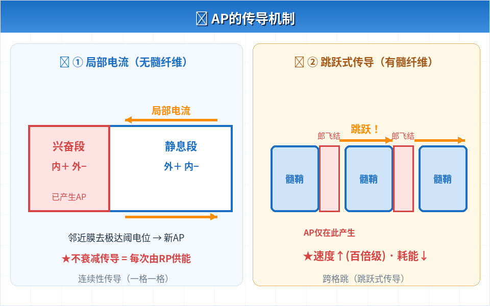
P11 传导 局部电流 + 有髓跳跃式传导对比图
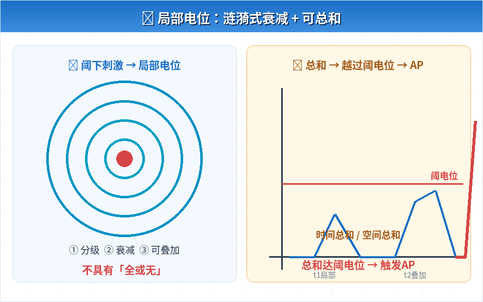
P12 局部电位 涟漪衰减 + 时间总和越阈触发AP图
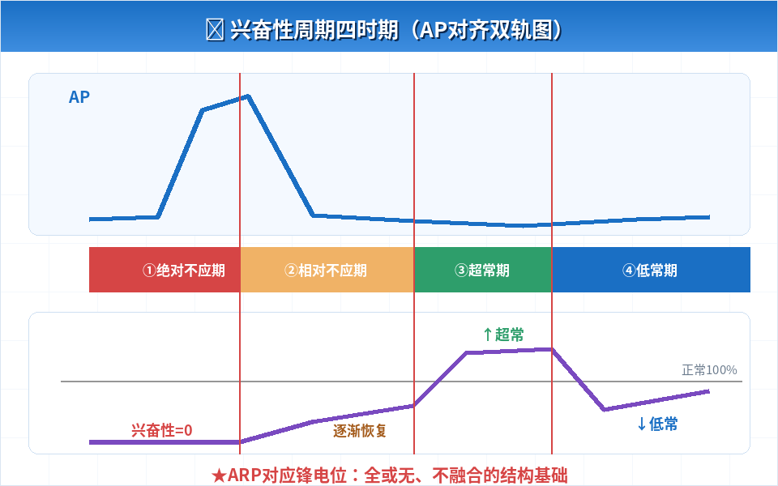
P14 兴奋性周期 AP+兴奋性双轨四时期图
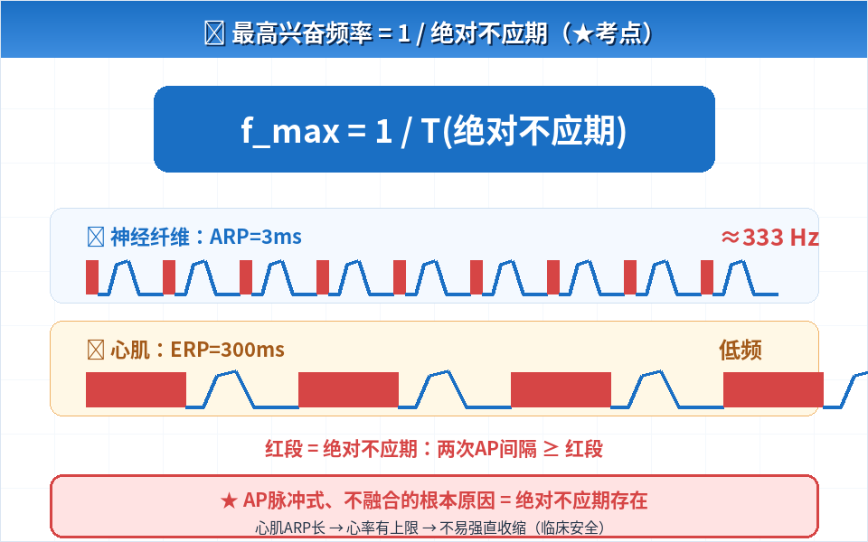
P15 考点延伸 ARP决定最高频率：神经vs心肌脉冲串图

P16 临床联系 ECG波形 + 利多卡因锁 + 高低钾RP对比图
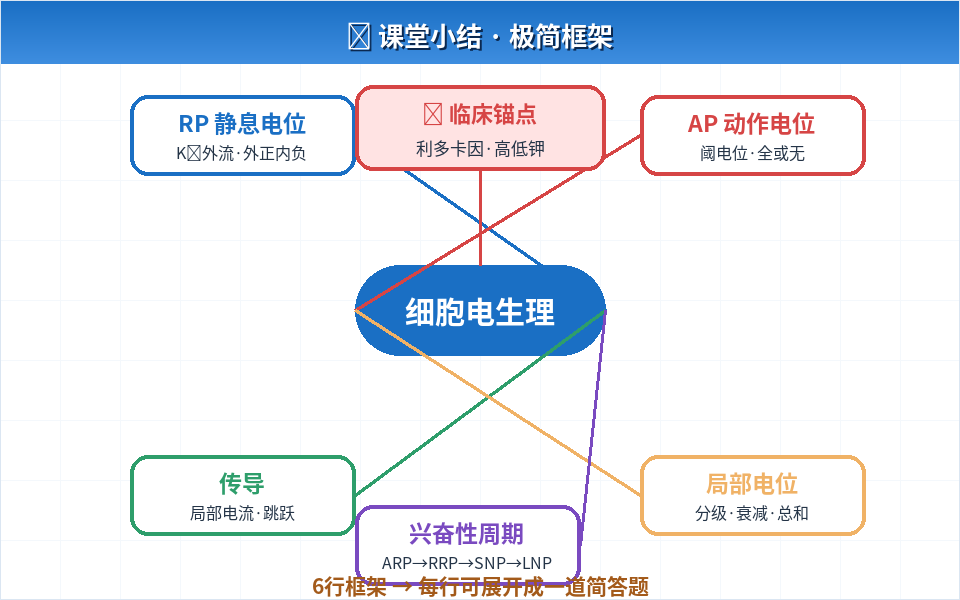
P18 课堂小结 细胞电生理思维导图

P19 课后作业 必做+拓展作业清单卡片图
📑 PPT 目录（P1-P20）
- P1 封面页：课程名称、章节、授课人
- P2 目录页：七大板块
- P3 导入：心肌/神经/骨骼肌兴奋基础，心电肌电脑电底层原理【配图】
- P4 前置基础：离子跨膜转运、钠钾泵、Nernst方程（本科简化版）【配图】
- P5 静息电位：定义、数值、产生条件、离子机制、特点【配图】
- P6 概念辨析：极化·超极化·去极化·复极化（配图标方向）【配图】
- P7 动作电位：定义、特征（全或无/不衰减/脉冲式）【配图】
- P8 时相拆解：去极相·反极化·复极相·后电位【配图】
- P9 离子机制：电压门控Na⁺/K⁺通道开闭时序【配图】
- P10 三概念：阈电位·阈刺激·阈强度逻辑关系【配图】
- P11 传导机制：局部电流学说·跳跃式传导【配图】
- P12 局部电位：产生条件、四大特点【配图】
- P13 对比表格：局部电位 VS 动作电位（核心考点）
- P14 兴奋性周期：ARP/RRP/SNP/LNP 四时期【配图】
- P15 考点延伸：绝对不应期决定最高兴奋频率【配图】
- P16 临床联系：心电肌电·利多卡因·高低钾血症【配图】
- P17 易错辨析：六组易混点汇总
- P18 课堂小结：极简框架版【配图】
- P19 课后思考：必做+拓展思考【配图】
- P20 参考文献
🎯 教学目标覆盖情况
- 掌握①静息电位机制 → P4、P5、P6（含K⁺外流图）
- 掌握②动作电位产生与传导 → P7、P8、P9、P11（含通道时序图+传导图）
- 掌握③阈电位概念 → P10（三栏逻辑图）
- 掌握④局部电位特点 → P12、P13（涟漪图+对比表）
- 熟悉①兴奋性周期变化 → P14、P15（双轨图+频率图）
- 熟悉②钠钾ATP酶功能 → P4（钠钾泵图）
- 了解①临床/心电/肌电意义 → P3、P16（ECG+利多卡因+高低钾图）
- 区分四组易混概念 → P6、P10、P13、P17
💡 使用提示：点击上方「⬇ 下载 PPT 课件」直接保存 .pptx 文件（浏览器不会保存为网页）。所有示意图均已内嵌在 PPT 对应页面中，可在 PowerPoint/WPS 中自由编辑、缩放、改色。每页含【教师备注栏】与【★考点】标记。